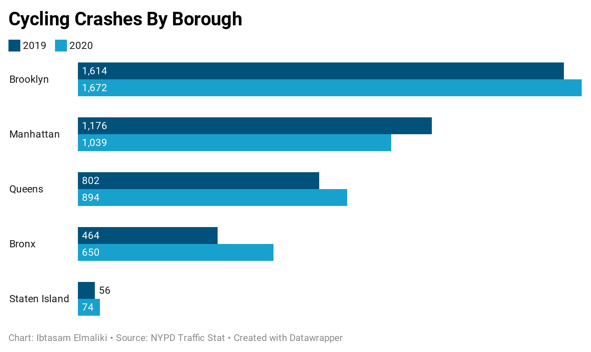

By Ibtasam Elmaliki
NEW YORK- On November 5, a 25 year old cyclist on Bruckner Boulevard, Broxnx, died after being hit by a vehicle. The cyclist is now one of the 8 victims to be killed in the Bronx this year, a stark contrast to the zero deaths in 2019. Cyclist crashes are also on the surge in the Bronx with the largest increase of crashes compared to the rest of the boroughs; crashes increased by a whopping 40% in just one year.
Bikers took to social media to raise their concerns, citing dangerous bike lanes as one of the issues. Yana Gorokhovskaia, a 35 year old researcher who works at a think tank in New York, lives in Queens and quickly took notice to how much safer the lanes were in other boroughs once biking in the Bronx.
“Me and my husband went out to the Bronx in the middle of August and it was just the worst area that I've seen in New York in terms of bike paths, and just accessibility. There are some protected bike paths, the green ones, but there are areas where they just end at an intersection,” said Gorokhovskaia. “In other places there’s cars just parked, blocking the bypass, there was even an area where mechanics were using the bike path as a loading center for their customers, so it’s just really dangerous. It’s hard to bike safely.”
Kevin Daloia, a 57 year old avid biker, and former co-chairperson at the Transportation Alternative Bronx Activist Committee, advised citizens to get involved with community boards with The Department of Transportation, to get their voices heard on this issue.
Daloia is behind the Ghost Bike Project in the Bronx, an awareness memorial project for the cyclists killed. A bike with its parts removed, is painted white, and placed at the scene of the crash to honor the victims. “Me and others do a bike ride to the location in honor of those who lost their lives. We put up a plaque saying a few words and decorate the bike with yellow and red flowers. It’s the least we can do for their families.”

Sources:
https://www.google.com/search?q=ghost+bike+nyc&tbm=isch&ved=2ahUKEwjBubrRn_7sAhWCBt8KHTG6BYAQ2-cCegQIABAA&oq=ghost+bike+nyc&gs_lcp=CgNpbWcQAzICCABQqNYBWJ3cAWC04AFoAHAAeACAAU2IAfYCkgEBNpgBAKABAaoBC2d3cy13aXotaW1nwAEB&sclient=img&ei=_dCtX4HHGIKN_Aax9JaACA&bih=712&biw=1321&safe=images&hl=en#imgrc=FyN19Udm_JXYJM
https://www.transalt.org/press-releases/transportation-alternatives-statement-in-response-to-cyclist-killed-on-bruckner-boulevard-in-the-bronx#:~:text=%E2%80%9CAnother%20person%20has%20been%20killed,New%20York%20City%20this%20year
https://www.nydailynews.com/new-york/ny-bike-deaths-2019-dot-street-safety-20191229-glbw2wm5ebbf3ogstugswyqupi-story.html